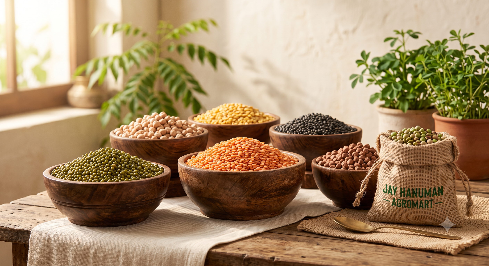
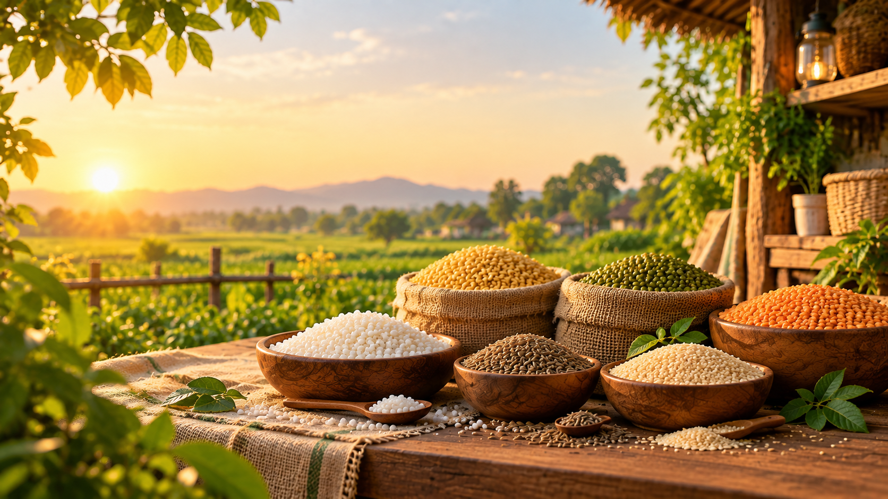
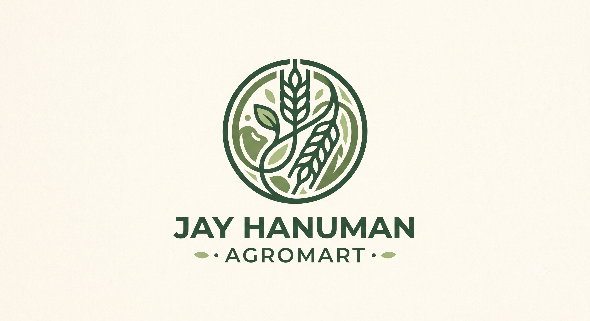
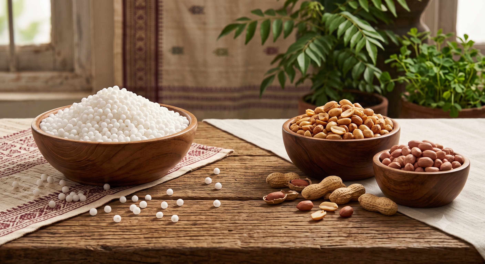
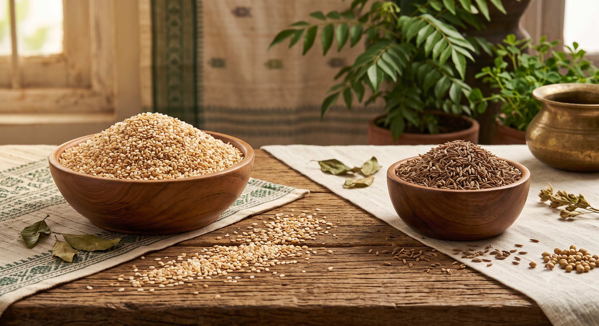
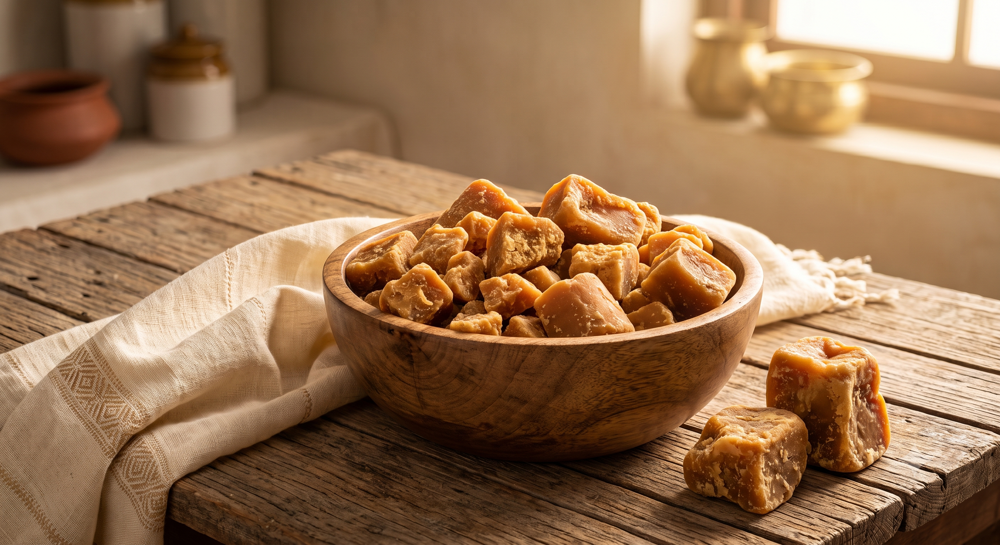
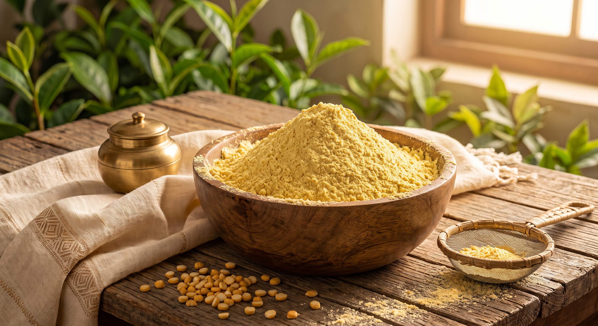

Pulses
A variety of dals and pulses for everyday cooking.

Quality • Variety • Trust
Explore pulses, grains, seeds, jaggery, spices and other everyday essentials.
Explore Products
About Us
Jay Hanuman – Agromart brings together a diverse range of pulses, grains, seeds, jaggery, spices and everyday essentials.
From familiar staples to varieties that can be harder to find, we bring useful choices together under one roof.
Explore Our ProductsExplore Our Products
Explore our carefully selected range of pulses, grains, fasting essentials and more.

A variety of dals and pulses for everyday cooking.
Rice, wheat, jowar, maize and other staple grains.

Sabudana, peanuts and other selected fasting essentials.

Seeds, cumin, sesame and other useful everyday ingredients.
Featured Selection
A closer look at a few products from our wider range.

Traditional golden-brown jaggery available in selected varieties.
Enquire About Jaggery →
Fine gram flour for everyday favourites and traditional recipes.
Enquire About Besan →Selected farming varieties including urad, moong and maize.
Enquire About Seeds →Good to Know
A few thoughtful highlights about our products, everyday value and what makes our store worth exploring.
Explore Highlights →Visit Us
Find us in Akolkhed or get in touch for product enquiries and store information.
Jay Hanuman – Agromart
Akolkhed, Akot, Akola,
Maharashtra, India
Morning: 9:00 AM – 12:00 PM
Evening: 5:00 PM – 9:00 PM